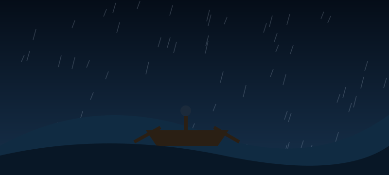

Ending: Into the Swell

You untie the rowboat and push out into the swell before you can talk yourself out of it. Twice a wave lifts you so high that the oars catch nothing but air, and twice you nearly go over. Somehow you get close enough to shout and wave the crew towards the gap in the reef, and all four of them make it through. Your rowboat does not. It breaks apart on the rocks on the way back in and you spend four hours hanging off a channel marker in the dark. A rescue boat finds you at dawn, frozen stiff and, for about a week afterwards, quite famous.
THE END